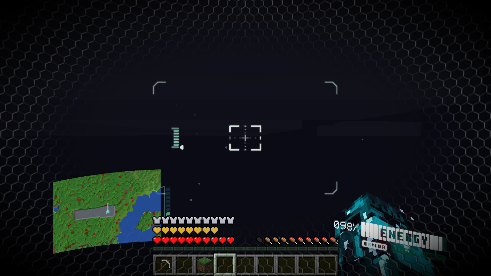
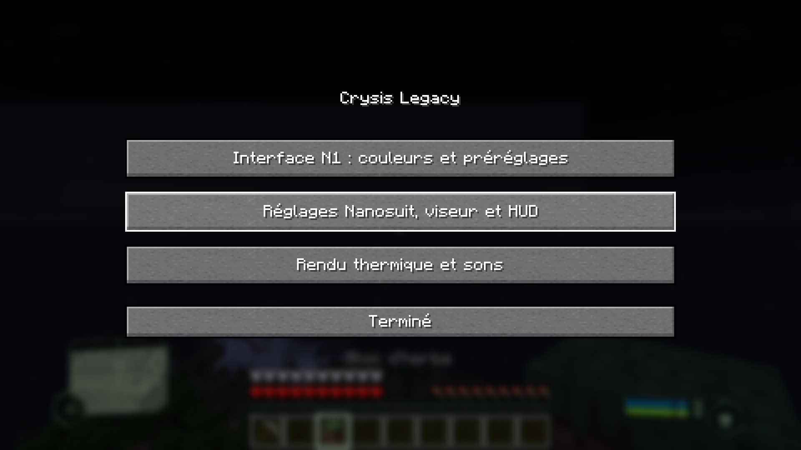
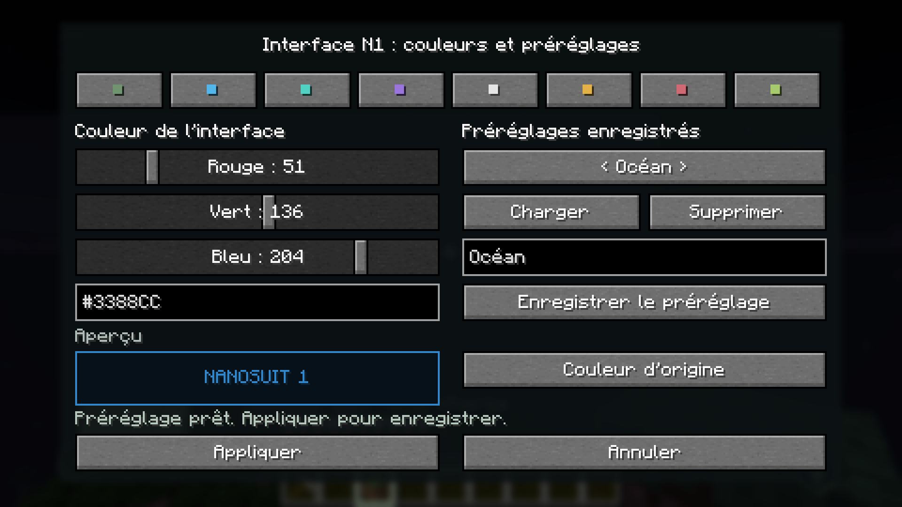
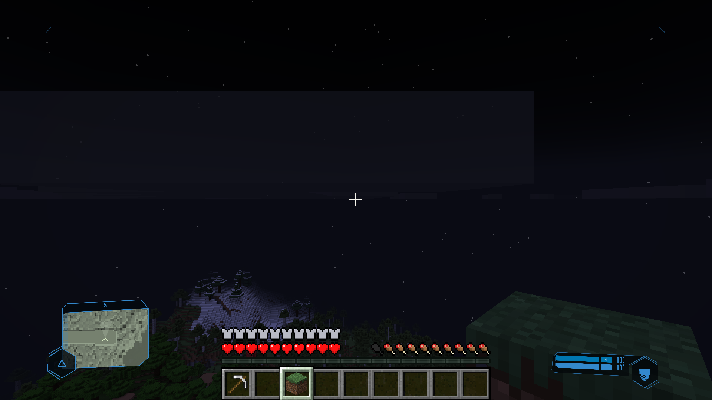
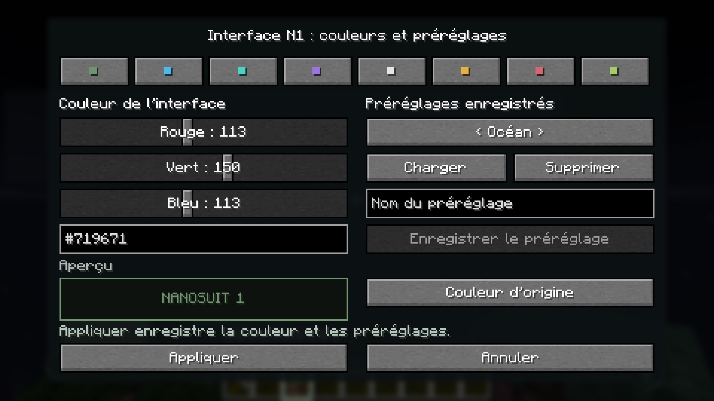

Captures réelles Minecraft 1.21.1 / RTX 3070 dans une copie isolée. Le défilement testé passe par le callback souris de Minecraft. Les modifications de configuration restent dans la copie du banc.




